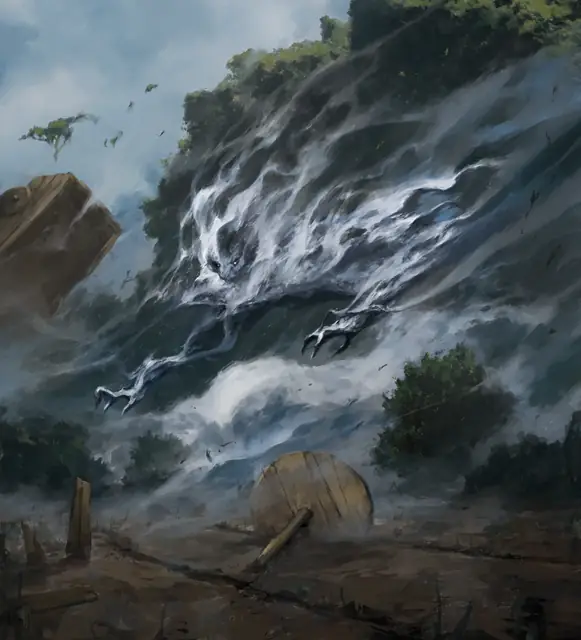

Воздушный элементаль
Air Elemental
Большой Элементаль, Нейтральный

Класс Защиты 15 Инициатива +5 (15)
Хиты 90 (12к10 + 24)
Скорость 10 футов, Полёта 90 футов (парит)
| мод | спас | ||
|---|---|---|---|
| СИЛ | 14 | +2 | +2 |
| ЛОВ | 20 | +5 | +5 |
| ТЕЛ | 14 | +2 | +2 |
| мод | спас | ||
|---|---|---|---|
| ИНТ | 6 | −2 | −2 |
| МДР | 10 | +0 | +0 |
| ХАР | 6 | −2 | −2 |
Сопротивление урону Дробящий, Колющий, Рубящий, Электричество
Иммунитеты Звук, Яд; Бессознательный, Истощение, Окаменевший, Опрокинутый, Опутанный, Отравленный, Парализованный, Схваченный
Чувства Тёмное зрение 60 футов, пассивное Восприятие 10
Языки Первичный (Ауран)
Опасность 5 (1 800 опыта; БВ +3)
Особенности
Воздушное тело. Элементаль может входить в пространство другого существа и заканчивать там ход. Он может проходить через пространство шириной всего 1 дюйм, не тратя на это дополнительное перемещение.
Действия
Мультиатака. Элементаль совершает две атаки Громовым ударом.
Громовой удар. Бросок рукопашной атаки: +8, досягаемость 10 фт. Попадание: 14 (2к8 + 5) урона Звуком.
Смерч (Перезарядка 4–6). Спасбросок Силы: Сл 13, одно существо Среднего размера или меньше в пространстве элементаля. Провал: 24 (4к10 + 2) урона Звуком, и цель отталкивается от элементаля по прямой на расстояние вплоть до 20 футов и Опрокидывается. Успех: Только половина урона.
Бонус мастерства +3
Среда обитания Горы, Пустыня, Стихийный план Воздуха
Сокровища Отсутствуют
Воздушный элементаль
Первозданный дух ветра и бурь
Воздушные элементали — это живые, полные энергии духи со Стихийного плана Воздуха. Они свивают облака и ветры в переменчивые тела, у которых нет чётких конечностей и едва угадываются черты. За пределами родного плана эти элементали могут служить призвавшим их заклинателям или собираться вокруг узлов необузданной планарной энергии — например, у продуваемых ветрами горных пиков или посреди бесконечных бурь. В бою воздушные элементали обрушивают на врагов мощные порывы ветра или превращаются в смерчи, отшвыривая противников прочь.
Воздушные элементали часто отличаются друг от друга по составу. Совершите бросок по таблице «Состав воздушного элементаля» для вдохновения или решите сами, из чего состоит воздушный элементаль.
Состав воздушного элементаля
| 1к6 | Тело воздушного элементаля состоит из… |
| 1 | Кучевых или слоистых облаков. |
| 2 | Смеси ярко окрашенных газов. |
| 3 | Едких, прокисших миазмов. |
| 4 | Двигающихся облачков в виде животных и простых фигур. |
| 5 | Туманной дымки, скрывающих зловещий лик. |
| 6 | Бурлящих грозовых туч. |